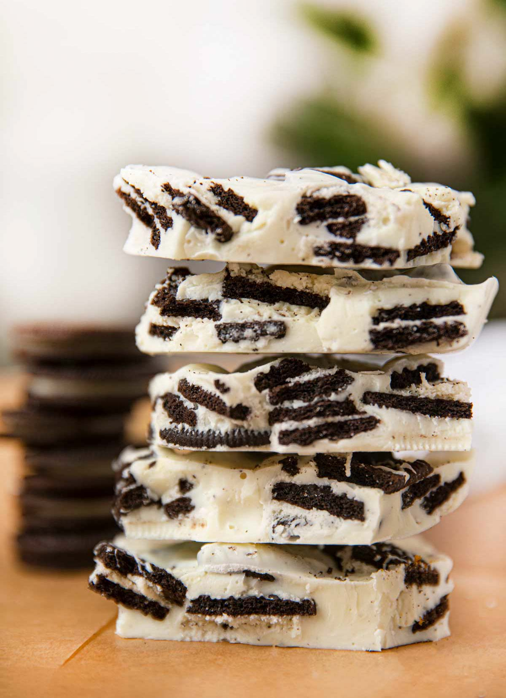

Oreo Cookie Bark
This is really more of a candy than a cookie, but it is always
a hit on my cookie trays!!

Ingridients:
- 1 (20 ounce) package chocolate sandwich cookies with creme filling
- 2 (18.5 ounce) packages white chocolate
Steps:
- Line a 10x15 inch jellyroll pan with waxed paper. Coat paper with non-stick vegetable
spray and set aside.
- In a large mixing bowl, break half of the cookies into coarse pieces with fingers or the back of
a wooden spoon.
- In a microwave safe glass or ceramic mixing bowl, melt one package of the white chocolate
according to package directions. Remove from microwave and quickly fold in broken cookie pieces.
Pour mixture into prepared pan and spread to cover half the pan.
- Repeat process with remaining chocolate and cookies, spreading mixture into the other half of
pan. Refrigerate until solid, about 1 hour.
- Remove bark from the pan and carefully peel off waxed paper. Place bark on a
large cutting board and cut with a large chef's knife. Store in airtight container.